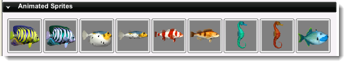
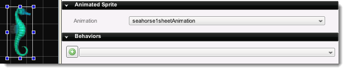

Introduction
Animated Sprites (t2dAnimatedSprite) are any objects that use a
series of imagemap frames, or cells, to create an animation. They are
commonly used for animating characters, moving props and various special
effects. Animated sprites require an animation to have previously been
created in the Create Tab.
Creation
To view a short tutorial on creating an animation in the editor,
click
here. Once your animation has been created,
navigate to the Create Tab and find your previously created Animated
Sprites.

Find the Animated Sprite that you wish to add to your scene. Drag it from the panel and drop it in your scene.
Properties
With the Animated Sprite placed in your scene, make sure it is selected then click on the Edit Tab.

- Animation - The animation to use for this animated sprite object.
Script Representation
new t2dAnimatedSprite() {
animationName = "angelfish1sheetAnimation";
canSaveDynamicFields = "1";
config = "FishDatablock";
Position = "-92.000 -127.000";
size = "64.000 64.000";
CollisionMaxIterations = "3";
AlphaTestValue = "-1";
mountID = "5";
};
Conclusion
Animated sprites are essential to providing a lively and visually
appealing experience for your users. Most objects involved in an
interaction can make use of an animation, so use them often. To view a short tutorial on creating an animation in the editor,
click here. |